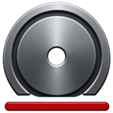
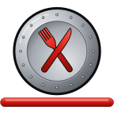

WORKOUTS
Build workouts your way.
Create as many workouts and exercises as you need—without required templates. Existing workout names are suggested as you type.
RAWIRON
Focused applications designed with a clear purpose, a clean experience, and useful features without unnecessary complexity.


Build workouts your way
Train. Log. Repeat. Progress. A focused workout log built around fast entry, flexible workouts, complete exercise history, and the information you need to keep progressing.
Visit RawIron LogWORKOUTS
Create as many workouts and exercises as you need—without required templates. Existing workout names are suggested as you type.
CLONING
Clone workouts and exercises to quickly build your next session, with previous weights and reps available as useful starting points.
LOGGING
Log sets, alternating sets, bodyweight work, reps, weight, statuses, reordering, and notes without getting in the way of your workout.
PROGRESS
Reach the top of your rep range and the weight goes up when you clone: on each set, once every set gets there, or just your top set. Give an exercise its own increment, or leave it out.
CALCULATOR
See the plates for each side, add a pair of plates in a tap, and keep each machine's base weight. Estimate your one-rep max with a percentage table.
HISTORY
Review past performance and copy useful information from previous exercise entries when you need it.
NOTES & TIMER
Add workout and exercise notes, search your notes, view past notes, and use the built-in workout timer with start, stop, and restart controls.
PERSONALIZE
Choose metric or imperial units, 12- or 24-hour time, portrait or landscape, and customize rep ranges, your bar and plates, and suggestions to match how you train.
TRAINING JOURNAL
Create a journal for any date range, with your totals and best sets, then every workout with its sets and notes. Print it or save it as a PDF.
SEARCH & ORGANIZE
Search and organize your training information quickly, with helpful suggestions and tools for keeping your log manageable.
BACKUP & RESTORE
Back up and restore your workout data using JSON, giving you control over your training history without requiring a cloud account.
PRIVATE & OFFLINE
RawIron Log is local-first. Your workout data stays on your device, and normal use does not require an account, cloud service, or internet connection.

MACRO TRACKING
Fuel. Track. Repeat. Progress. A focused macro tracker built around the way you actually eat: log each meal, see the day's calories, protein, carbs, and fat, and look back over your daily history.
Visit RawIron FuelMEALS
Breakfast, lunch, and dinner, plus meals of your own like snacks or pre-workout, with servings and serving sizes. Foods you've had before fill in their serving and macros as you type.
MACROS
Calories and grams of protein, carbs, and fat for the day, with each macro's share of the calories. Leave calories empty and they're worked out from the macros.
TRACKED VALUES
Add iron, vitamin C, fiber, or anything else, with its unit. Each one is totaled for the day beside your macros.
REPEAT
Copy a meal from the last day you had it or any recent day, or copy any food to today in a swipe.
HISTORY
Every day you've logged with its totals and your daily average. Tap a day for every meal and item.
FOOD HISTORY
Pick a food to see each time you had it, with its totals, and copy it to any day and meal.
FUEL JOURNAL
Create a journal for any date range, with your totals, daily average, and most eaten foods, then print it or save it as a PDF.
PRIVATE & OFFLINE
No account, no ads, no tracking. Your food log stays on your device, with JSON backups you control.
PRICING
The same simple model for every Raw app.
Try the full RawIron Log or RawIron Fuel experience before deciding whether to unlock it.
Unlock each app with a lifetime purchase—no subscription.
WHAT'S NEXT
Additional focused tools may follow as the Raw product family grows, each built to do one thing well, privately and offline.